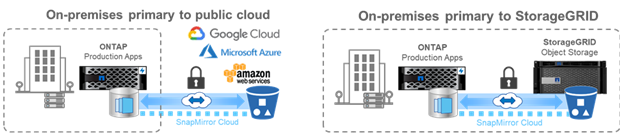

NetApp ONTAP 產品特色概述
NetApp ONTAP 產品特色概述
資料保護
 建議變更
建議變更
本文件內容中的資料保護、是指資料的異地複寫概念、以及保護傳輸中和閒置中的資料。本節說明ONTAP 有關更新的資料保護功能、以利更新《關於更新資料的資訊、更新資料、更新及
安全性
每ONTAP 個版本均以全新的安全功能和增強功能打造、ONTAP 而在這方面、與眾不同的是、如需ONTAP 更多關於功能的資訊、請參閱 "TR-4569：ONTAP 《資訊安全強化指南》（英文）9"。
安全清除
在具有機密或敏感資料的環境中、將檔案錯誤寫入不應存取該檔案的人可以存取的磁碟區、會造成所謂的資料外溢。這會造成必須刪除整個磁碟區並清除磁碟以清除溢漏的情況。
NetApp Volume Encryption和Secure清除可刪除與檔案相關的安全加密金鑰、以密碼化方式銷毀個別檔案、藉此減輕這些潛在災難的影響。在金鑰消失之後、該資料就無法從磁碟恢復。資料恢復公司已使用NIST SP 800-88媒體衛生準則、對此程序進行外部驗證。
但即使安全清除也有其限制、例如、如果您必須清除檔案、就必須執行磁碟區移動、這需要系統中的可用空間。如果已安裝SnapMirror、您必須在安全清除作業之後重新建立基準。
Secure清除ONTAP 功能可透過下列方式移除這些限制：
-
提供簡單的密碼編譯檔案就地程序。
-
讓您不需重新設定基準、就能將現有的SnapMirror鏡像保留在原地。
IPsec
IPsec是一種標準機制、可在網路上執行不受應用程式限制的加密。有了IPSec、無論使用何種傳輸協定、您都可以加密網路流量。這提供了簡化的機會、尤其是在難以設定及使用Kerberos加密的NFS上、也提供加密有線iSCSI流量的唯一方法。
現在支援支援IPSec。ONTAPIPSec的實作功能運用預先共用的密碼或金鑰（PSK）與連線用戶端。ONTAP這些用戶端包括任何最近使用IKEv2搭配PSK的作業系統。請注意、Windows作業系統不支援具有PSK的IKEv2。
信任平台模組
利用更新的可靠平台模組（TPM）ONTAP 功能、Onboard Key Manager（OKM）的加密金鑰會由實體TPM密封、提供更高的安全性與保護。移轉至TPM是不中斷營運的程序。
NetApp Volume Encryption
NetApp Volume Encryption（NVE）是一種軟體解決方案、可加密啟用此功能的任何磁碟機類型上的任何資料磁碟區、並為每個磁碟區提供唯一的金鑰。此功能自ONTAP 推出以來一直都有提供。
支援NVE的節點根磁碟區包含記錄檔、叢集組態備份、核心檔案及其他系統相關資訊、您可能會想要使用符合FIPS-140-2的加密來保護這些資料。ONTAP
SnapMirror雲端
SnapMirror是ONTAP 領先業界的複寫技術、可讓儲存管理員透過WAN連線建立資料集的確切複本、並只複寫變更的區塊、以降低網路使用率。
在過去的ONTAP 幾個版本中、SnapMirror支援已擴大至包括非ONTAP系統、例如 "元件OS SolidFire"。現在、支援使用SnapMirror複寫至雲端或內部部署S3物件儲存區的功能。ONTAP

善用新功能 "SnapDiff 3.0引擎"SnapMirror可以安全高效地將資料從ONTAP 整個過程中的不間斷NAS磁碟區複寫到物件式儲存桶。這可讓混合雲在ONTAP 整個支援整個資料架構之間移動。
-
快照的空間效益備份至雲端物件儲存設備、可保留儲存效率。
-
支援完整Volume與單一檔案還原
在NetApp 9.8中ONTAP 、SnapMirror Cloud需要透過下列兩種方法之一進行協調。System Manager或直接透過API或CLI不支援此功能。
-
透過授權的ISV合作夥伴應用程式、建立及管理備份與還原工作流程。需要SnapMirror Cloud授權。
-
透過Cloud Backup Service 這個功能。不需要SnapMirror Cloud授權。
如需SnapDiff和SnapMirror Cloud的詳細資訊、請參閱下列資源：
SnapMirror營運不中斷（SMBC）
"SnapMirror同步" （SM - S）在ONTAP 《支援資料》9.5中推出、提供企業所仰賴的磁碟區精細與儲存效率同步資料複寫功能、以利備份、災難恢復與資料移動性。SM-S會在FlexVol 位於資料中心或都會區的完全備援ONTAP 的邊圓儲存系統（RTT）之間複寫NetApp的邊圓磁碟區上的資料、往返時間（RTT）少於10毫秒、以達到零恢復點目標和接近零的恢復時間目標。
在SAN環境中採用SnapMirror Synchronous的概念、並在一致性群組中為應用程式提供自動化的容錯移轉功能、使用System Manager進行設定、以及使用BMC Medator來管理及維持營運不中斷。ONTAP ONTAP因為這種關係是同步的、所以當容錯移轉時、應用程式不會錯過任何一項。SnapMirror業務永續性的初始版本僅支援SAN（iSCSI和FCP）工作負載。
如需SnapMirror營運不中斷的詳細資訊、請參閱 "第267集：SnapMirror營運不中斷Tech OnTap"。
MetroCluster
NetApp MetroCluster 功能（MC）軟體是結合陣列式叢集與同步複寫的解決方案、以最低成本提供持續可用度、零資料遺失。由於消除了通常與主機型叢集相關的相依性與複雜度、因此更容易管理陣列型叢集。

此功能可在每筆交易的基礎上、立即複製所有任務關鍵型資料、讓您不中斷地存取應用程式和資料。MetroCluster不像標準資料複寫解決方案、MetroCluster 它能與主機環境無縫搭配運作、提供持續的資料可用度、同時免除建立及維護複雜容錯移轉指令碼的需求。
有了這個功能、您可以執行下列工作：MetroCluster
-
透過透明的切換功能、防止硬體、網路或站台故障
-
避免計畫性和非計畫性停機、以及變更管理
-
在不中斷營運的情況下升級硬體和軟體
-
部署時不需複雜的指令碼、應用程式或作業系統相依性
-
實現VMware、Microsoft、Oracle、SAP或任何關鍵應用程式的持續可用度
支援下列功能增強功能、以利執行下列功能。ONTAP MetroCluster
-
新的入門級與中階平台支援。 NetApp AFF S25A、FAS500f、FAS8300、FAS S258700混合式和A400。對於A220、FAS2750和FAS500f的新安裝、現在可以將VLAN指定為大於100且小於4096。
-
*從MC-FC到MC-IP.*的不中斷移轉僅限四節點叢集；雙節點MCC需要停機。在您即將進行的技術更新中、輕鬆移轉至MC IP。
-
*目前支援MC IP*的無鏡射集合體。*只會將所需的集合體複寫到容錯移轉站台、以提高應用程式精細度。
-
支援Cisco 9336C-FX2交換器、FAS 並在BE-53248交換器上支援A400、S58300和FAS S58700、並額外提供100G連接埠授權。
如需MetroCluster 更多有關支援的資訊、請參閱下列資源：